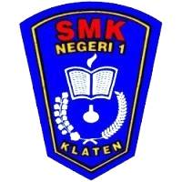
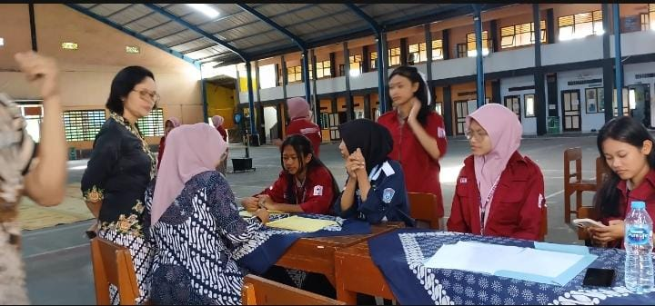
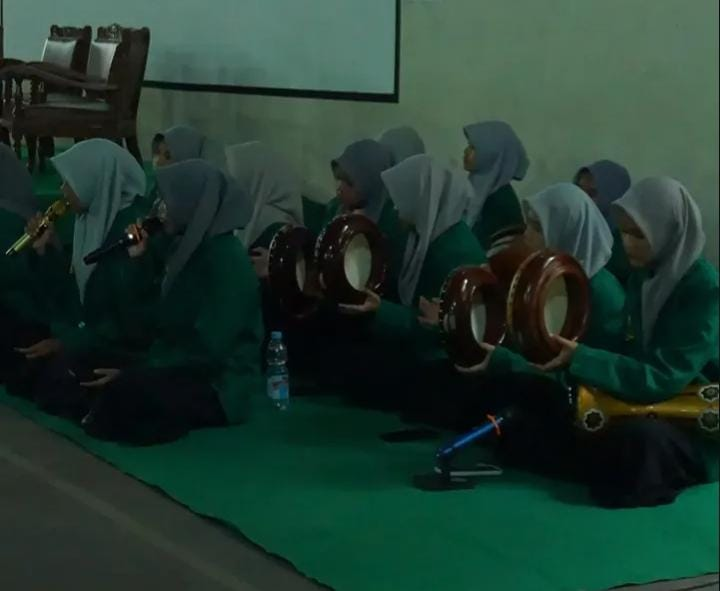
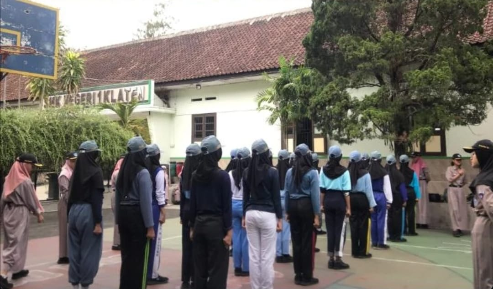
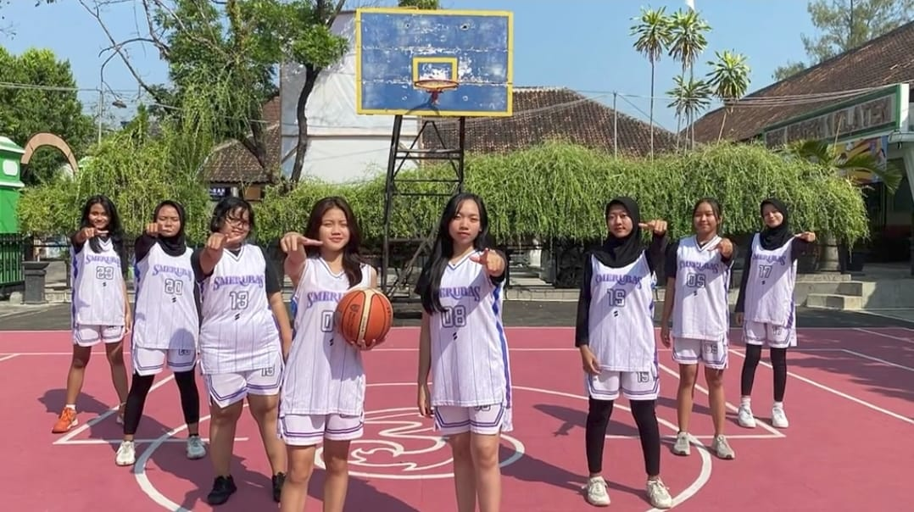
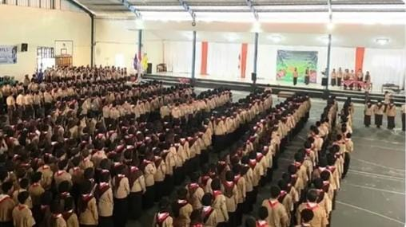
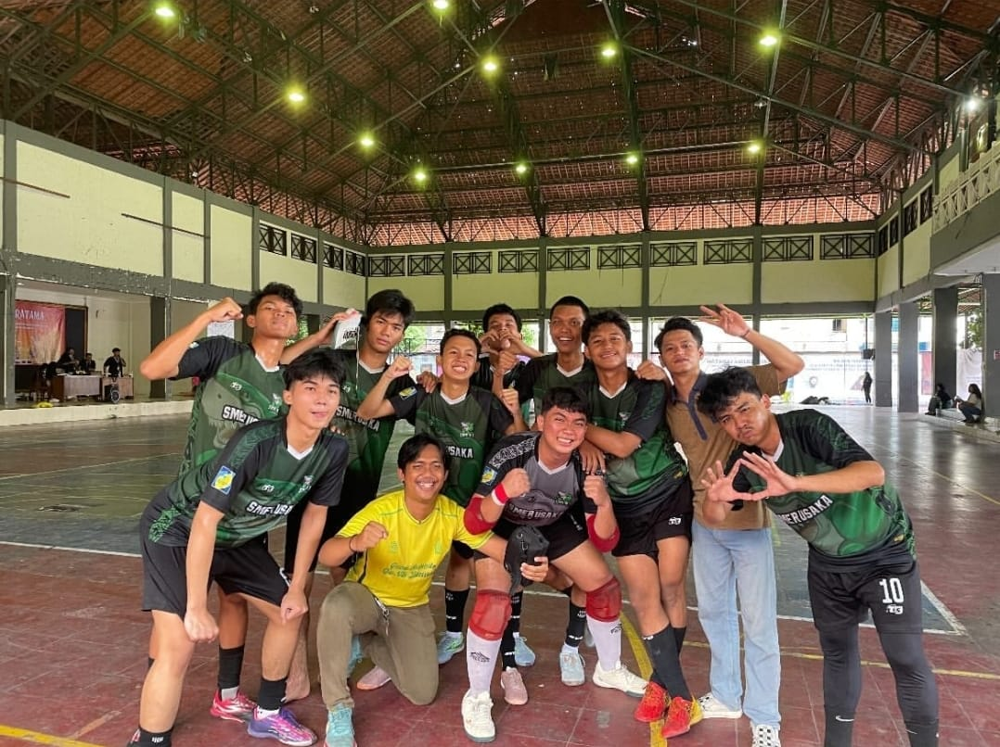
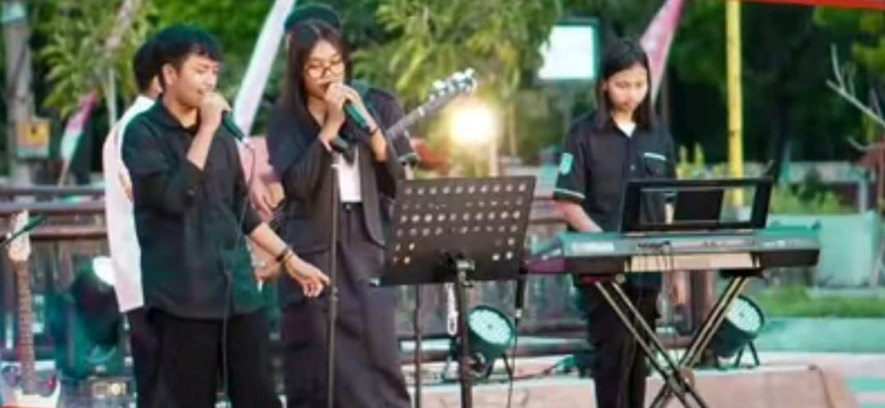

Selamat datang di website informasi ekstrakurikuler SMK Negeri 1 Klaten. Temukan berbagai kegiatan yang dapat membantu mengembangkan minat, bakat, kreativitas, keterampilan, kepemimpinan, dan karakter siswa.
Sekolah tidak hanya menjadi tempat untuk mendapatkan ilmu pengetahuan, tetapi juga menjadi tempat untuk mengembangkan potensi dan kemampuan diri. Melalui berbagai kegiatan ekstrakurikuler, siswa dapat memperoleh pengalaman baru, bertemu dengan teman-teman, serta mengembangkan keterampilan yang bermanfaat untuk masa depan.
SMK Negeri 1 Klaten menyediakan berbagai pilihan kegiatan ekstrakurikuler, mulai dari organisasi, olahraga, keagamaan, kepemimpinan, hingga seni dan kreativitas. Setiap kegiatan memiliki karakteristik dan manfaat yang berbeda sehingga siswa dapat memilih kegiatan sesuai dengan minat dan bakatnya.
Pilih ekstrakurikuler yang sesuai dengan minat dan bakatmu. Jadikan masa sekolah sebagai kesempatan untuk belajar, berkembang, berkarya, dan meraih prestasi.
Lihat Semua Ekstrakurikuler
PMR merupakan ekstrakurikuler yang berfokus pada bidang kesehatan, pertolongan pertama, dan kegiatan kemanusiaan. Anggota PMR dilatih untuk memberikan pertolongan pertama pada kecelakaan ringan, menjaga kesehatan diri dan lingkungan, serta berpartisipasi dalam kegiatan sosial dan donor darah. Melalui PMR, siswa belajar sikap peduli, empati, kerja sama, dan kesiapsiagaan dalam membantu sesama.

ROHIS adalah ekstrakurikuler yang bertujuan meningkatkan keimanan, ketakwaan, dan akhlak mulia siswa. Kegiatan yang dilakukan antara lain kajian keislaman, tadarus Al-Qur'an, peringatan hari besar Islam, bakti sosial, dan berbagai kegiatan keagamaan lainnya. Melalui ROHIS, siswa diharapkan dapat menjadi pribadi yang berkarakter, berakhlak baik, serta mampu menerapkan nilai-nilai Islam dalam kehidupan sehari-hari.

PASKIBRA merupakan ekstrakurikuler yang melatih keterampilan baris-berbaris, kedisiplinan, kepemimpinan, dan rasa cinta tanah air. Anggota PASKIBRA memiliki peran penting dalam pelaksanaan upacara bendera dan berbagai kegiatan resmi sekolah. Selain itu, mereka juga mengikuti latihan fisik, pembinaan karakter, dan persiapan untuk mengikuti lomba maupun seleksi pasukan pengibar bendera tingkat daerah hingga nasional.

Ekstrakurikuler Basket menjadi wadah bagi siswa yang memiliki minat dan bakat di bidang olahraga bola basket. Dalam kegiatan ini, siswa mempelajari teknik dasar seperti menggiring bola, mengoper, menembak, dan strategi permainan. Selain meningkatkan kebugaran jasmani, ekstrakurikuler Basket juga melatih kerja sama tim, sportivitas, disiplin, serta semangat untuk berprestasi melalui berbagai pertandingan dan kompetisi.

Pramuka merupakan ekstrakurikuler yang bertujuan membentuk karakter siswa agar menjadi pribadi yang disiplin, mandiri, bertanggung jawab, serta memiliki jiwa kepemimpinan. Kegiatan Pramuka meliputi latihan rutin, perkemahan, penjelajahan, pionering, tali-temali, sandi, pertolongan pertama, hingga kegiatan bakti sosial. Selain mengembangkan keterampilan hidup, Pramuka juga menanamkan rasa cinta tanah air, kepedulian terhadap lingkungan, serta semangat gotong royong dalam kehidupan bermasyarakat.

Futsal merupakan ekstrakurikuler olahraga yang mengembangka kemampuan bermain sepak bola dalam ruangan. Kegiatan ini melatih teknik dasar seperti passing, dribbling, shooting, dan kerja sama tim. Selain meningkatkan kebugaran jasmani, Futsal juga mengajarkan disiplin, sportivitas, tanggung jawab, dan semangat berprestasi.

Band merupakan ekstrakurikuler yang menjadi wadah bagi siswa untuk mengembangkan minat dan bakat di bidang musik. Siswa dapat belajar memainkan alat musik, bernyanyi, mengatur aransemen, dan bekerja sama dalam sebuah kelompok. Kegiatan Band juga membantu meningkatkan kreativitas, kepercayaan diri, dan kemampuan tampil di depan umum.
| Ekstrakurikuler | Hari | Jam |
|---|---|---|
| PMR | Rabu | 15.30 - 17.00 |
| ROHIS | Jumat | 13.00 - 15.00 |
| PASKIBRA | Kamis | 15.30 - 17.00 |
| Basket | Rabu | 15.30 - 17.00 |
| Pramuka | Jumat | 14.00 - 16.00 |
| Futsal | Kamis | 15.30 - 17.30 |
| Band | Rabu | 15.30 - 17.00 |
Instagram: @humas.smkn1klaten
Alamat: Jl. Dr. Wahidin Sudiro Husodo No.22, Klaten